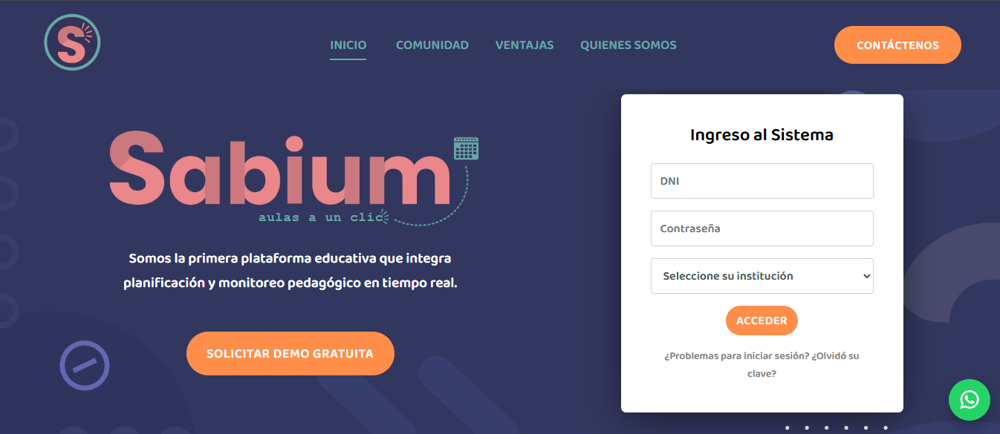
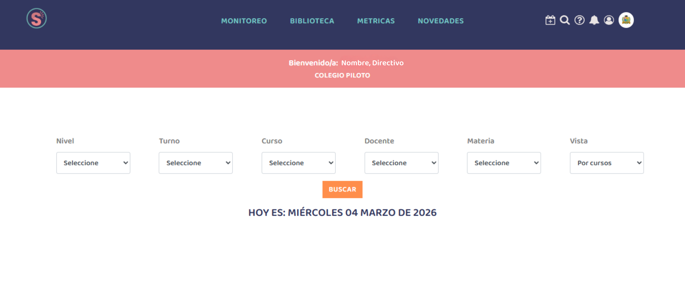
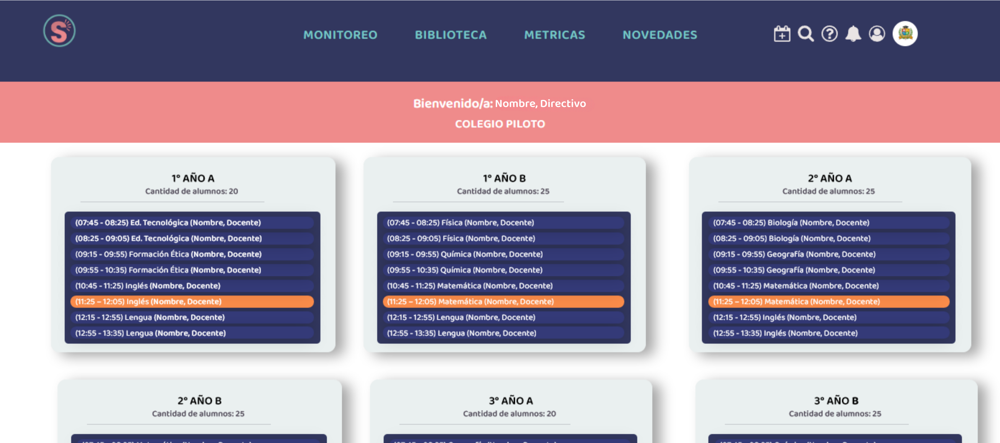
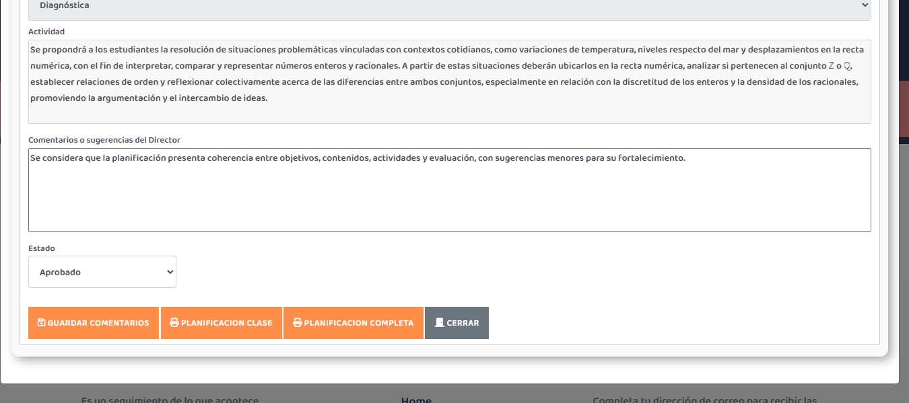
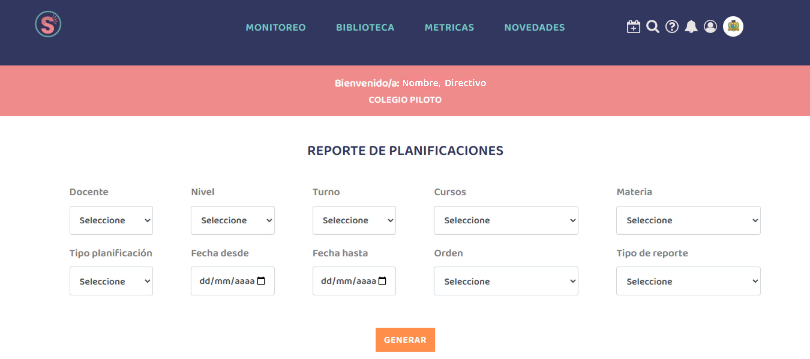
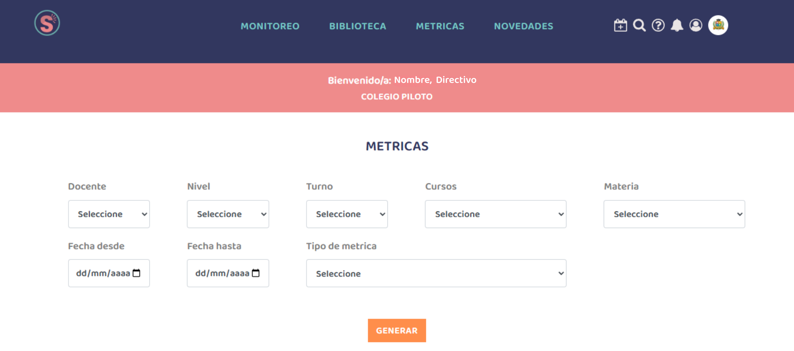
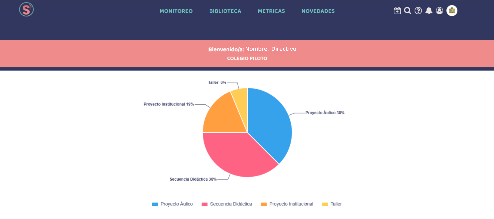
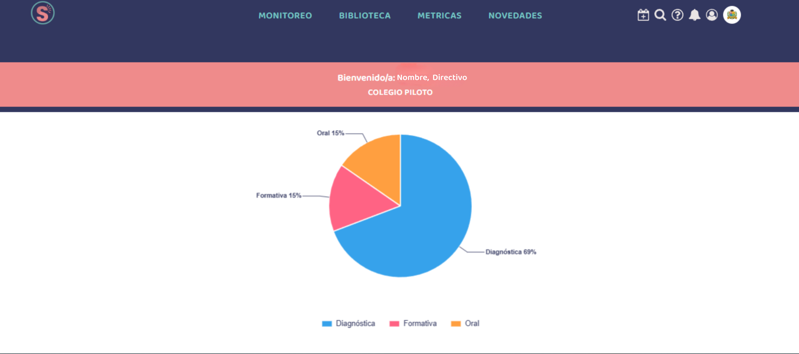
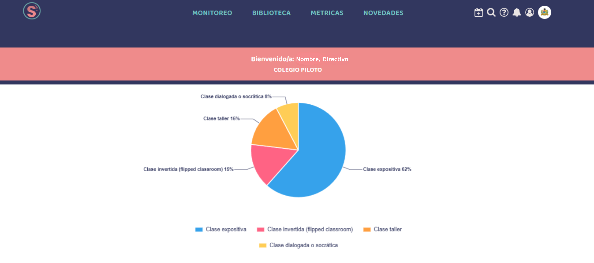

Guía Oficial para Directivos
Manual del
Directivo
en Sabium
Todo lo que necesitás saber para monitorear, revisar y acompañar el trabajo pedagógico de tu institución.
Todo lo que necesitás saber para monitorear, revisar y acompañar el trabajo pedagógico de tu institución.
Antes de empezar a usar la plataforma, es clave entender su propósito real. Sabium no es un sistema de gestión escolar genérico. Es una herramienta 100% enfocada en la planificación y el seguimiento pedagógico institucional.

Abrí el navegador y escribí www.sabium.com.ar. En la página de inicio vas a ver el formulario de acceso al sistema.
| Campo | Qué ingresar |
|---|---|
| DNI | Tu número de DNI sin puntos ni espacios |
| Contraseña | La contraseña que te asignó la institución (si no la sabés, usá el enlace "¿Olvidó su clave?") |
| Seleccione su institución | Elegí tu institución del listado desplegable |
El sistema te va a llevar directamente a tu panel de inicio con tu nombre y el nombre de la institución en el banner rosado superior.
El Monitoreo es tu punto de entrada principal como directivo. Desde acá podés filtrar y visualizar el trabajo pedagógico de cualquier docente, curso o materia de tu institución.
En el menú superior de navegación, hacé clic en MONITOREO. Vas a ver la pantalla de bienvenida con tu nombre y el nombre de la institución, más los filtros de búsqueda.

Los filtros te permiten acotar la búsqueda por múltiples criterios. Podés combinarlos según lo que necesites ver.
| Filtro | Qué hace | Ejemplo de uso |
|---|---|---|
| Nivel | Filtra por nivel educativo | Secundario, Primario, Inicial |
| Turno | Muestra solo el turno seleccionado | Mañana, Tarde, Noche |
| Curso | Filtra por división específica | 2do A, 3ro B |
| Docente | Ver el trabajo de un docente en particular | Nombre, Docente |
| Materia | Enfocarse en una asignatura | Matemática, Lengua |
| Vista | Cambia el modo de visualización | Por cursos / Monitor Semanal / Monitor Mensual |
Al hacer clic en BUSCAR, Sabium despliega el calendario según la vista que elegiste: por cursos (agrupadas por división), semanal (día a día) o mensual (panorama completo del mes). Estas 3 vistas son el corazón del monitoreo pedagógico."
El calendario semanal te permite visualizar todas las clases de la semana actual. Podés navegar entre diferentes semanas para revisar las planificaciones pasadas o futuras, y visualizá el avance pedagógico del curso.
![Weekly calendar interface displaying a 7-day view with color-coded class blocks representing scheduled lessons. Each day column shows time slots with blocks labeled with course names, instructor information, and class states. Green blocks indicate completed and closed planning, yellow blocks indicate unscheduled time slots, and accent-colored blocks show recalendarized classes. The calendar grid includes navigation arrows to move between weeks and a summary panel showing class details upon selection, with icons indicating different status types.](img/monitor_semanal.png)
El calendario semanal es donde podés ver el estado de todas las clases calendarizadas de un vistazo. Cada bloque tiene íconos que te informan qué acción realizar en cada clase.
![Weekly calendar interface displaying a 7-day view with color-coded class blocks representing scheduled lessons. Each day column shows time slots with blocks labeled with course names, instructor information, and class states. Green blocks indicate completed and closed planning, yellow blocks indicate unscheduled time slots, and accent-colored blocks show recalendarized classes. The calendar grid includes navigation arrows to move between weeks and a summary panel showing class details upon selection, with icons indicating different status types.](img/monitor_semanal2.png)
Te permite ingresar a ver la planificación del docente ya creada, dejar comentarios y asignarle un estado: aprobada, rechazada u observada.
Te permite acceder a la pestaña de recalendarización para ver las clases que el docente recalendarizó y reprogramó
Corresponde a ese día y horario actual.
La vista "Por cursos" te permite ver de un solo vistazo qué está pasando en cada curso en este momento, quién está dando clase, en qué materia, y cuáles son las próximas clases del día.

En la vista mensual, podés ver el mes completo de un vistazo, con todas las clases y sus contenidos en los bloques de cada día y horario:
![Monthly calendar interface displaying a full month view with color-coded class blocks representing scheduled lessons. Each day cell shows time slots with blocks labeled with course names, instructor information, and class states. Green blocks indicate completed and closed planning, yellow blocks indicate unscheduled time slots, and accent-colored blocks show recalendarized classes. The calendar grid provides an overview of the entire month's schedule, allowing for quick identification of planning status across all courses.](img/mensual.png)
| Estado en el calendario | Qué significa |
|---|---|
| Bloque azul | Clase calendarizada con planificación completa cargada por el docente |
| Bloque amarillo | Corresponde a ese día/horario pero no tiene clase calendarizada todavía |
| Ícono junto a la clase | Te permite ingresar a ver la planificación del docente ya creada, dejar comentarios y asignarle un estado: aprobada, rechazada u observada. |
Esta es una de las funciones más poderosas de Sabium para el directivo: podés revisar el contenido de cualquier clase planificada, ver el eje curricular, el objetivo, la actividad, y dejar tus comentarios o sugerencias directamente al docente, todo dentro de la plataforma.
Desde el calendario semanal, hacé clic sobre el ícono del calendario . Se va a abrir el detalle completo de esa clase con todos los campos que cargó el docente.
![Class planning modal showing course name, date, time, class code, and instructor name at the top. Below are input fields for pedagogical strategy with a dropdown menu for teaching methods such as expository lesson or Socratic dialogue. Adjacent field for evaluation type with options for diagnostic, formative, or oral assessment. Large text area for detailed activity description where teachers can write complete lesson plans. At bottom are three action buttons: Save Activity button in orange, Class Planning button to calendar and close the individual class, and Complete Planning button in orange to finalize all classes in the sequence at once. Navigation arrows visible at sides to move between classes in the same planning sequence.](img/detalle-planificacion.png)
Dentro de la vista de detalle, usá las flechas ‹ › de los costados para pasar de una clase a la siguiente o anterior, sin necesidad de volver al calendario.
En la parte inferior del detalle vas a encontrar el campo "Comentarios o sugerencias del Director". Escribí tu feedback, observaciones o recomendaciones. El docente lo va a ver cuando acceda a esa clase.

Bajo los comentarios encontrás el campo Estado. Podés usarlo para marcar si la planificación fue revisada, aprobada, necesita revisión, etc. (según los estados disponibles en tu institución).
En la parte inferior del modal encontrás los botones de acción. Es importante entender la diferencia entre cada uno:
Guarda solo los comentarios de esta clase. Podés seguir editando después.
Descarga en pdf esta clase individualmente.
Descarga en pdf todas las clases de la planificación.
Desde el menú BIBLIOTECA podés generar reportes detallados del trabajo planificado por cualquier docente en un rango de fechas. Ideal para supervisión, reuniones institucionales o seguimiento de compromisos pedagógicos.
Dentro de Biblioteca, vas a ver un formulario con múltiples filtros.

Hacé clic en GENERAR. El sistema muestra la tabla dependiendo el tipo de reporte:
La sección MÉTRICAS te permite analizar patrones pedagógicos: qué tipo de evaluación usa más un docente, qué estrategias metodológicas predominan en un curso, y más. Es una herramienta de análisis, no solo de seguimiento.
Hacé clic en MÉTRICAS en el menú superior. Completá los filtros: docente, nivel, turno, cursos, materia, rango de fechas y el tipo de métrica que querés analizar.

Distribución por tipo de planificación (proyecto áulico, proyecto institucional, taller, secuencia didáctica, etc.), con porcentajes y visualización gráfica.

Distribución por tipo de evaluación diagnóstica, formativa, oral, escrita, etc. Con porcentajes y gráfico.

Muestra qué estrategias metodológicas de enseñanza usa el docente: clase expositiva, trabajo grupal, ABP, etc. Con porcentajes y gráfico.

| Pregunta | Respuesta |
|---|---|
| ¿Cómo recupero el acceso si olvidé mi contraseña? | Desde la pantalla de ingreso, usá el enlace “¿Problemas para iniciar sesión? ¿Olvidó su clave?”. Si no se resuelve, la institución debe restablecer tu acceso. |
| ¿Qué puedo filtrar en Monitoreo? | Podés filtrar por nivel, turno, docente, curso, materia, fecha, estado y tipo de planificación para enfocar la búsqueda pedagógica. |
| ¿Qué diferencia hay entre las 3 vistas del calendario? | “Por cursos” agrupa por división, “Semanal” muestra el detalle día a día y “Mensual” da una vista general del mes para seguimiento institucional. |
| ¿Qué significan las celdas amarillas en calendario? | Las celdas amarillas señalan horarios con clase asignada pero aún sin planificación calendarizada. |
| ¿Cuándo recibe el docente mi feedback? | Cuando guardás el comentario en la planificación, el docente recibe la notificación y puede verlo al abrir esa clase. |
| ¿Qué diferencia hay entre reporte simplificado y ampliado? | El simplificado resume datos clave; el ampliado agrega detalle por clase con ejes, objetivos, contenidos, estrategia metodológica, evaluación, actividad y observaciones. |
| ¿Para qué sirven las métricas institucionales? | Ayudan a analizar patrones pedagógicos por tipo de planificación, tipo de evaluación y estrategia metodológica para preparar devoluciones y tomar decisiones de acompañamiento. |
| ¿Sabium permite cargar notas o comunicarse con familias? | No. Según esta guía, Sabium se enfoca en planificación y seguimiento pedagógico; no reemplaza sistemas de calificaciones ni módulos de comunicación con padres. |
El equipo de Sabium está disponible para acompañarte en cada paso de la implementación.
Sabium Aulas a un Clic · Plataforma educativa argentina
Planificación · Calendarización · Seguimiento pedagógico